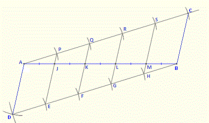

This shows how to divide a given line segment into a number of equal parts with compass and straightedge or ruler. In the applet we divide it into five parts but it can be any number. By using a compass and straightedge construction, we do this without measuring the line.
The above animation is available as a printable step-by-step instruction sheet, which can be used for making handouts or when a computer is not available.
The image below is the final drawing above with the AD, CB added and points labelled.

| Argument | Reason | |
|---|---|---|
| We first prove that AC, DB are parallel | ||
| 1 | AC = DB | By construction. See Copying a line segment for method and proof |
| 2 | AD = CB | By construction. Compass width for AD set from CB |
| 3 | ACBD is a parallelogram. | A quadrilateral with congruent opposite sides is a parallelogram. |
| 4 | AC, DB are parallel | Opposite sides of a parallelogram are parallel. |
| We next prove that PE, QF are parallel | ||
| 5 | PQ = EF | Drawn with same compass width |
| 6 | PQ, EF are parallel | From (4) |
| 7 | PQFE is a parallelogram. | A quadrilateral with one pair of opposite sides parallel and congruent is a parallelogram. |
| 8 | PE, QF are parallel | Opposite sides of a parallelogram are parallel. |
| Prove that triangle AQK is similar to and twice the size of APJ | ||
| 9 | ∠APJ = ∠AQK | Corresponding angles. AB is a transversal across the parallels PE, QF |
| 10 | ∠AJP = ∠AKQ | Corresponding angles. AB is a transversal across the parallels PE, QF |
| 11 | Triangles AQK, APJ are similar | AAA. ∠PAJ is common to both, and (9), (10). See Similar triangles test, angle-angle-angle. |
| 12 | Triangles AQK is twice the size of APJ | AP = PQ. Both drawn with same compass width. |
| Prove that AJ = JK | ||
| 13 | AK is twice AJ | (11), (12). AQK is similar to, and twice the size of APJ. All sides of similar triangles are in the same proportion. See Properties of similar triangles . |
| 14 | AJ = JK | From (13), J must be the midpoint of AK. |
| We have proved the first two segments along the given line AB are congruent. We repeat steps 5-14 for each successive triangle. For example we show that triangle ARL is similar to and three times APJ, and so AJ is one third AL. We continue until we have shown that all the segments along AB are congruent. |
||
| 15 | AJ = JK = KL = LM = MB | By applying the same steps to triangle AQK, ARL etc. |
| 16 | AB is divided into n equal parts. | |